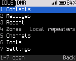
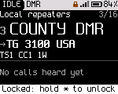

Questa pagina non è ancora tradotta; è mostrata in inglese.
Keys and Navigation
Each key does the same kind of thing on every screen.
The five rules
- OK opens or chooses the thing with the focus. Holding OK does the lasting version, such as save or make permanent.
- Back goes back one level. On Home it undoes one temporary change per press. Holding Back returns to Home from anywhere.
- * opens quick settings for what you are doing. Holding * locks or unlocks the keys.
- # opens the actions for the thing with the focus, such as a person, a talkgroup, a message or the last caller. Holding # opens Recent.
- PTT talks to the person or talkgroup with the focus in any list, once. With nothing focused, it talks to the channel's talk target.
The bottom line of most screens is the hint row. It shows what the nearest keys do there. What Back does is at its right end, above the Back key.
Menus initially select the first available item. You can still move to a dimmed item and press OK to see why it is unavailable. Back restores your previous menu selection.
Key reference
The keys are named by their job (Conventions). Key roles lists which physical key does each job on your radio. It also lists what replaces a key the radio doesn't have.
| Key | Press | Hold |
|---|---|---|
| OK | Home: open the hub. Lists: open or choose | Save or make permanent |
| Back | Back one level. Home: undo one temporary change | Home |
| Up, Down | Move the focus. Home: next or previous channel (VFO: frequency step), or zone or talk target with Settings > Keys > Up/Down on Home (the channel knob stays on the channel). Editors: change the value | Repeats |
| * | Quick settings. While you transmit on FM with PTT: its touch tone | Lock or unlock the keys |
| # | While you transmit on FM with PTT: its touch tone. Otherwise: actions for the focused item. Home: actions for the last caller. VFO: tunes a frequency being typed, as OK | DMR channels: the talk target picker (pick a talkgroup, or type an ID). Recent is OK, 3 |
| 0 to 9 | Home: start Find. Lists: pick a numbered row, or type to filter. VFO: type a frequency. While you transmit with PTT: FM sends the key's touch tone, DMR nothing | Home: speed dial (not built yet). While you transmit with PTT: as a press |
| Previous zone, Next zone | Home: previous or next zone | |
| Monitor | FM: opens the squelch while held. DMR: digital monitor (every talkgroup) on or off | |
| Talk target | Talk target picker (DMR channels) | Dual watch on or off |
| Power level | Home: next power level | Hold 1.5 s: emergency (Emergency) |
| PTT | Transmit | |
| Channel knob | Each click is one step. Clockwise: the next channel on Home (as Up), the next row down in a list or menu, a higher value in an editor. Counterclockwise: the opposite |
The side keys (Monitor, Talk target and Power level on most radios) can do other jobs. Set them in Settings > Keys (Settings) or in the codeplug.
Each key press gives a short key beep unless Settings > Sound > Key tones is off.
While the keys are locked (hold *), PTT still works. When Settings > Key lock > PTT when locked is off, PTT gives an error beep and "PTT is off while locked: hold * to unlock".
Moving around
The Home screen is the base. Every other screen is at most three levels away from it.
Home
|-- * Quick settings
|-- OK Hub: 1 Contacts, 2 Messages, 3 Recent, 4 Zones, 5 Channels, 6 Tools, 7 Settings
| (a radio without # gets 0 Last caller at the top)
|-- # Actions for the last caller
|-- hold # Talk target picker (DMR)
|-- 0-9 Find
'-- Talk target Talk target picker
In numbered lists (the hub, Tools, Settings, actions, quick settings) a number key picks the row with that number directly. For example, OK, 6 opens Tools.
In long lists (Contacts, Channels, a zone's channels) the number keys filter the list by name, the way a phone keypad spells words. 2 is ABC, 3 is DEF, and so on to 9 (WXYZ). Each key narrows the list to names with a word that starts with those letters. Back deletes the last key typed, then leaves the list.

Find
On Home (not in the VFO), a number key opens Find. Find searches everything at once. Type digits. Find lists, in this order:
- The channel at that position in the current zone. "12" lists channel 12.
- The digits as a frequency in one of the radio's bands, read as in the VFO: "438250" lists "Tune VFO to 438.250". OK opens the VFO on it. The VFO's mode, power and tones stay as they were.
- Channels in the zone, contacts and talkgroups, zones, places (Contacts, Messages and so on) and settings whose names match the keys as letters.
- Contacts whose DMR ID starts with the number, from three digits on.
- The number itself, as a talkgroup ("Talk to TG 3100", "not saved") and as a private call ("Private call 3100").
- "Create contact 3100" when no contact has that ID. OK opens New Contact (Contacts).
Then:
| Key | Does |
|---|---|
| OK | Go to the channel or zone, tune the VFO, open the place or setting, talk to the talkgroup or person for now, or create the contact |
| PTT | Talk to the focused talkgroup or person once |
| # | Actions for the focused talkgroup or person |
| Back | Delete the last digit. With one digit left, leave Find |
Settings also answer to other names. For example, "promiscuous" finds Digital monitor and "TOT" finds TX timeout.


Temporary and permanent changes
Changes you make while operating (power, squelch, tone, timeslot, color code, mode, talk target) are temporary. They last until you change the channel or press Back on Home. Home marks the changed fields. To keep a change in the channel, hold OK on Home or in quick settings. The radio shows "Saved to channel". In the VFO, changes are kept automatically, so a hold says "VFO settings save automatically". Squelch is one setting for the whole radio, so squelch set in the VFO becomes the default squelch on every channel too (the same as holding OK to save it on a channel). If another write is in progress, it says "Save busy: try again"; wait a moment and hold OK again.
Back on Home clears one thing per press, in this order:
- a frequency being typed
- a banner
- the scan
- the reply window
- digital monitor
- all temporary changes together ("Changes undone")
Key lock
On Home, hold * to lock the keys. The screen shows "Keys locked: hold * to unlock" and an "L" in the status line. While locked, PTT and Monitor still work. Any other key, and the channel knob, shows the unlock hint. Hold * again to unlock. The volume knob still works, unless Settings > Key lock > Knob when locked is Off. In menus holding * doesn't lock, so a slow press can't lock the keys in the middle of a task.
Settings > Key lock > Auto lock locks the keys by itself after a time without a key press. A radio with only side keys (no keypad, no Back key) never locks by itself: nothing could unlock it.

Toasts and banners
Short messages ("toasts") appear in the hint row for about two seconds. A toast shows the result of an action, or why something isn't available. A long toast takes a second line above the hint row and isn't cut short. Banners announce events (a message, a call alert, a radio check result) for eight seconds. While a banner about a message or a call alert is up, # opens what it is about. Back on Home hides it.